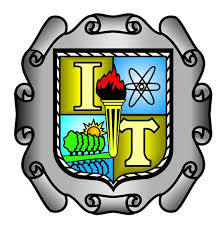

La arquitectura de computadoras es el diseño conceptual y la estructura operacional fundamental de un sistema de
computadoras. Y aporta a un
Ingeniero en Sistemas Computacionales habilidades de implementacion de aplicaciones
computacionales para solucionar problemas de diversos contextos, integrando diferentes tecnologías,
plataformas o dispositivos.
Diseña e implementa interfaces para la automatización de sistemas de hardware y desarrollo
del software asociado.
Coordina y participa en equipos multidisciplinarios para la aplicación de soluciones
innovadoras en diferentes contextos y evalúa tecnologías de hardware para soportar aplicaciones
de manera efectiva. Para integrarla se hizo un análisis de la materia de Principios Eléctricos y Aplicaciones Digitales,
identificando temas de electrónica digital que tienen mayor aplicación en el quehacer profesional del
Ingeniero en Sistemas Computacionales.
